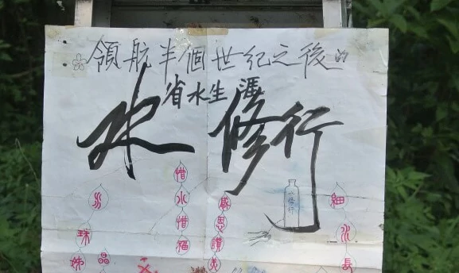

水修行
「知至至之，可與幾也，知終終之，可與存義也，是故居上位而不驕，在下位而不憂。」《易傳·文言》
成道學(1927-2003)人稱「老道」，水修行發明人，與區紀復等人創立鹽寮淨土。曾留學德國，專攻數學，又曾於台灣斗六市正心中學任數學教師，後轉為更加貼近學生生活的宿舍舍監。

大概跟區大哥是同類人吧，本可以選擇一條優渥舒坦的路，但偏要走一條，在世俗人眼中吃力不討好的路。或許，有些人瞭解到問題的關鍵，要作改變，必先從教育著手，不單是知識傳授的言教，而且是身體力行的身教。每想及此，我便記起文章開首《易傳》中的一句話。
余生也晚，未曾跟他見過面，只從區大哥口中和網上兩篇文章中認識他(注一)，而這篇文章主要是談水修行。
區大哥曾說過，一次他跟老道和幾位朋友到非洲某地探訪，每人獲分配一大瓶水，來者說，因該地乾旱，食水是珍貴資源，每人只能分得這些。之後幾天，大家都緊慎用水。不知老道是否在這種艱難環境底下，想出水修行來。
水修行，就是一個洗手器具，將沒用的膠水樽(寶特瓶)，盛水過半，樽身臥放，於近底處戳兩三小孔。洗手時將樽身豎立，小孔出水，洗畢，還原臥放狀態，小孔朝天。區大哥還特別題到，注意出水方向，最好下面是需要灌溉的植物。
「很不耐煩！」曾跟一位朋友談及水修行，她以這樣回應。接著說「好像洗來洗去都不乾淨」。心裡想，何以令她感覺不耐煩？然後細想，平日我們如何洗手？一般就是扭開水龍頭閥門，嘩啦嘩啦水自來，除非是在特別場境，如在醫院裡或傳染病高峰期間，才會左手搓右手擦，多耗點時間。一般不會花一兩分鐘去洗手吧，都是來去匆匆，也很少會去思考，水用量是否太多。放心，我不是來訓誨大家節約用水，若是你現在剛好更換單車鏈，只用水修行來清潔，好像有點窘態尷尬。我只想說兩點，第一「解決問題」，第二「時間」。
我看世情，不離這個循環：問題出現了，運用工具(資源)來解決問題，在解決過程中，新的問題(或多於一個)又出現了(可能馬上或之後)…假設現在有人覺得自己肥胖(問題)，想以踏單車(工具)來減肥，過程中單車鏈掉落(新問題)，好不容易搞妥，雙手髒兮兮的，以水(工具/資源)清潔，還要加添肥皂清潔劑等…如此如此。我們每天要做幾多決定，這些決定導致多少問題，然後又要花多少資源去解決這些問題。佛家說得更簡單———業(業力)，不同業力引申不同因果。我個人認為，水修行所帶出的不只是慎用節用，當然也不是揮霍無度。是「善用資源」，重點在於「善」字，最難也是這個「善」。
我們現正身處一個，無一不是資本的跨國資本主義生產關係當中，處在上層的資本累積者，一般稱之為資本家、大企業、政府。資本追逐利潤，套在上面那個問題工具循環中，她們面對第一個問題是，如何累積更多資本。先不理會她們用什麼工具解決問題，接著，她們第二個問題也是，如何累積更多資本，然後又解決問題，再問…這是永無止盡的死循環。她們使用的工具有二，一是刀，也叫金權法律道德，磨刀霍霍，朝向自然資源，這些資源當中一類比較重要和麻煩的類項，叫人類(勞動者、工人)，削其皮，剝其肉，這些皮肉也稱之為剩餘價值，這裡包括時間、空間、健康、知識、愛…再引申是麻木不仁、人性泯滅…其共同點就是，勞動者在生產過程中，原本屬於他/她們的東西被剝削掉。跟草木不能發聲不同，勞動者久經剝削會不滿反抗。此時她們祭出第二種工具———紅蘿蔔。假設有一頭驢，身上綁著一條橫木，木的另端捆於軸中，驢的活動範圍，就是以橫木作半徑的圓形軌跡，於其頸項綁上一支竹，竹端繫上一條紅蘿蔔。驢子開步，舌尖剛好碰到紅蘿蔔，紅蘿蔔又拋遠，再一步…機械開動了。那紅蘿蔔，管叫做「美麗新世界」。又有些勞動者工人，想掙脫這種狀態，剝尖自己(當然要用刀)，努力往上擠，成為新的資本累積者。對此我只想說，水修行，要注意水的流向，最好下面是需要灌溉的植物。
另外，還想講一下包含在剩餘價值裡的「時間」，在生產關係中，資本累積者購買了勞動者的時間，在這期間，勞動者離開崗位沒有生產，資本累積者的利潤受損。這就是為何在辦公室/學校內，你去洗手間太久，回來時老闆/師長會給你臉色看，就算他們不知，你身邊的勞動者/準勞動者也會爭相通知告密小報告(努力往上擠)。這也是上邊那個朋友，用水修行洗手時覺得不耐煩的原因。但話說回來，當傳染病爆發，資本累積者會衡量公共資源，如發生大規模感染，對其利潤損害更大，二害相權取其輕，不單不管你洗手時間，還要印製海報拍宣傳片，叫你洗手洗手洗手，又當疫情退却，一切回復「正常」。水修行，是以比正常要少的流量，比正常要多的時間，洗手時給你省思機會。
突然想到一首關於水的歌《細水長流》，歌者和作詞人已不在，歌詞中的你，可以是人，可以是物，可以是未竟之志，也可以是你。給逝者遙契祝福。
名稱裡有修行，就有禪味，要專注做一件事，一件小事；寫好一個字，掃清一塊地，洗淨一雙手…在做事也在做人，邊做邊思考，聆聽內心的聲音，體悟自身與世界的關係。
以上種種，皆是我從水修行中體悟到的事情，也許你有不同看法，今日就來找個膠水樽，試一試水修行。
聖人處無為之事，行不言之教。至此，可能我說得太多太多了。
潤物無聲，上善如水，修業篤行，是為水修行。
Stephen